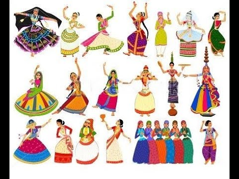

കേരള ഫോക്ലോർ അക്കാദമി - കണ്ണൂർ
ഫോക്ലോർ എന്നാലെന്ത്?

ഫോക്ലോർ എന്നാൽ ഒരു ജനതയുടെ പങ്കിട്ട അറിവുകളും പാരമ്പര്യങ്ങളും ഉൾക്കൊള്ളുന്ന നാടോടി വിജ്ഞാനമാണ്. ഇതിൽ നാടോടിക്കഥകൾ, ഐതിഹ്യങ്ങൾ, നാട്ടുപാട്ടുകൾ, ചടങ്ങുകൾ, ആചാരങ്ങൾ, കലാരൂപങ്ങൾ, കൈവേലകൾ, നാടൻ പാചകരീതികൾ തുടങ്ങിയവ ഉൾപ്പെടുന്നു.
ഫോക്ലോർ
ഫോക്ലോർ പദരൂപീകരണം
•ഫോക് + ലോർ = ഫോക്ലോർ
•' ഫോക് ' എന്നതിന് ജനം എന്നും 'ലോർ' എന്നതിന് വിജ്ഞാനം എന്നും പൊതുവിൽ അർത്ഥം പറയാം
ജനയിതാക്കൾ ജേക്കബ്ബ് ഗ്രിം , വിൽഹെം ഗ്രിം
ഫോക്ലോർ എന്ന പദം ആദ്യം ഉപയോഗിച്ചത് ജോൺ തോംസ് 1846ആഗസ്റ്റ് 22 ന് അഥീനിയം മാസികയ്ക്ക് എഴുത്തിയ
കത്തിലാണ് .
ഫോക്ലോർ
ഫോക്ലോർ
ഫോക്ലോർ നിർവചനങ്ങൾ

നാടൻ പാട്ടുകൾ
കേരളത്തിലെ ഓരോ പ്രദേശത്തും നിലനിന്നിരുന്ന ഭാഷയിൽ ഉണ്ടായിട്ടുള്ള പാട്ടുകളാണ് കേരളത്തിലെ നാടൻ പാട്ടുകൾ. ഇവ ഓരോ പ്രദേശത്തും നിലനിന്നിരുന്ന സാമൂഹ്യവ്യവസ്ഥയെയും സംസ്കാരത്തെയും പ്രതിനിധാനം ചെയ്യുന്നു. നാടൻപാട്ടുകൾ പല കാലങ്ങളിലായി പരിണാമം സംഭവിച്ച് വന്നവയാണ്. മിക്കവയ്ക്കും ഒരു രചയിതാവ് ഉണ്ടായിരിക്കണമെന്നില്ല.
ചുവടെ കൊടുത്തിരിക്കുന്ന നാടൻപാട്ടിന് അനുയോജ്യമായ ഈണവും താളവും നൽകി അവതരിപ്പിക്കുക.
• കൈതോല പായ വിരിച്ചു പായേല്
• പറനനെല്ലുഅളന്നേ
• കാതുകുത്താനെപ്പവരും നിന്റെമ്മാവൻമാർ പൊന്നോ
• കാതുകുത്താനെപ്പവരും നിന്റെമ്മാവൻമാർ പൊന്നോ
• ആആആ...ഏഏഏ....ഓഓഓ... (കൈതോ)
• കുന്നത്തങ്ങാടി ഷാപ്പിൽ കേറി
• പള്ളനിറയെ കള്ളും കുടിച്ചും
• ആദ്യാടിട്ടെപ്പവരും നിന്റെമ്മാവൻമാർ പൊന്നോ
• ആദ്യാടിട്ടിപ്പവരും നിന്റെമ്മാവൻമാർ പൊന്നോ
>ഇതുപോലുള്ള നാടൻ പാട്ടുകൾ ശേഖരിച്ച് ക്ലാസ്സിൽ അവതരിപ്പിക്കുക.
>കേരളീയ നാടൻ കലകൾ ഏതൊക്കെയാണ്?
Thank You